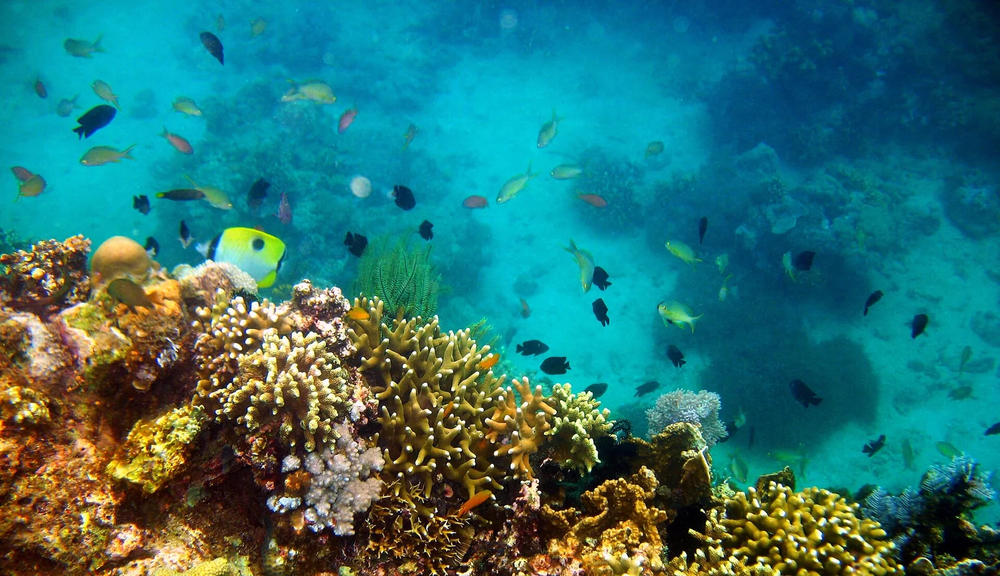

Anilao
Batangas, Philippines · plongée, snorkeling

Côte volcanique de la péninsule de Calumpan, à quelques heures de route de Manille, réputée pour la plongée macro. La plupart des sites sont à quelques minutes de bateau des centres de plongée.
- Lieu
- Batangas, Philippines
- Niveau
- Intermédiaire
- Activités
- plongée, snorkeling
- Type d'eau
- Mer / océan
- Coordonnées
- 13.71, 120.88 (position approximative du secteur)
Dangers à connaître
- Courants sur les sites les plus exposés.
- Trafic de bateaux de plongée.
Le conseil d'Ocean Buddy
Réserve un guide habitué à la macro et viens en semaine : le week-end, les plongeurs de Manille affluent.
Ouvrir dans Ocean Buddy Télécharger sur l'App Store
Source : Fiche Ocean Buddy · septembre 2026 · à vérifier localement.